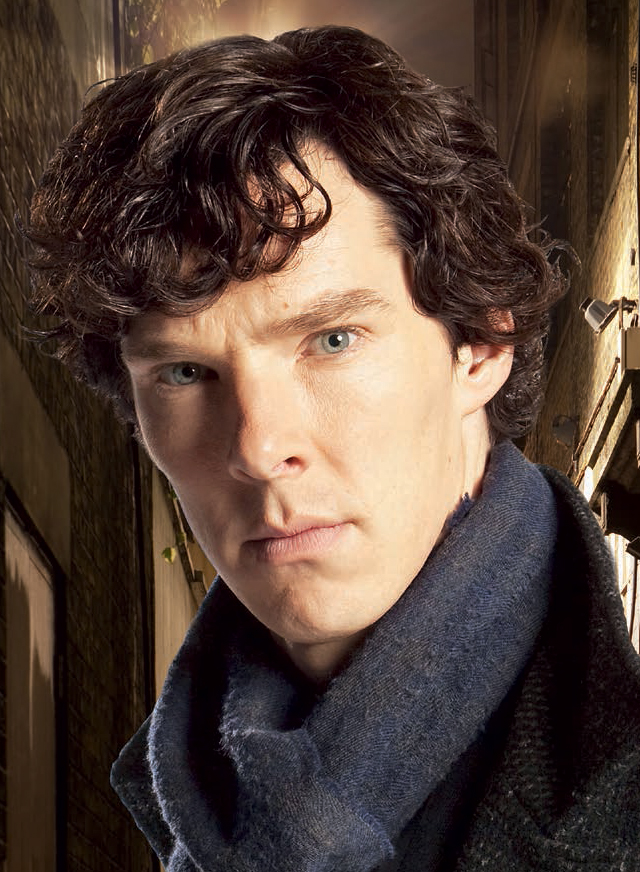
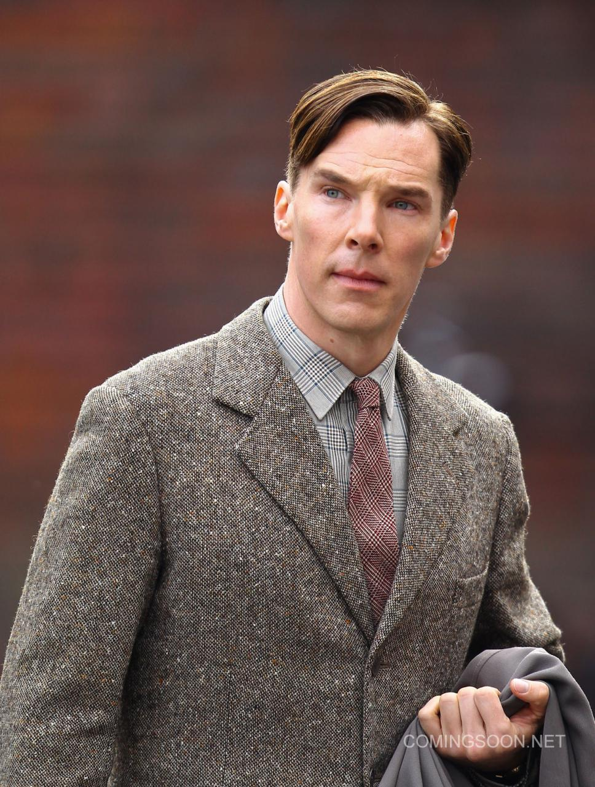

Біографія
Бенедикт Камбербетч народився 19 липня 1976 року в Лондоні у родині акторів — Ванди Вентем і Тімоті Карлтона. Навчався у престижній школі Гарроу, де вперше почав виступати на сцені. Після цього продовжив навчання у Манчестерському університеті та Лондонській академії музики і драматичного мистецтва.
Його театральна кар'єра почалася в Національному театрі, де він грав у класичних постановках. Широку популярність йому принесла роль Шерлока Холмса у серіалі «Sherlock» (2010–2017), що зробила його одним з найвідоміших британських акторів сучасності.
Режисер Девід Аттвуд сказав:
Ми знайшли Бенедикта Камбербетча досить легко. Нам був потрібен дуже хороший актор, хтось, досить молодий, щоб бути переконливим у ролі аристократичного, доволі неприємного героя, який за поняттями свого світу ще підліток. Але нам був потрібен і той, хто може триматися в кадрі чотири з половиною години, у кожній сцені, хтось досвідчений, не лише відмінний актор, але і з приголомшливим комічним почуттям часу. Бенедикт був ідеальною відповіддю на усе це.
Камбербетч також зіграв у багатьох кінофільмах, серед яких «Гра в імітацію» (2014), де він втілив Алана Тюрінга, та «Доктор Стрендж» у кіновсесвіті Marvel.
Досягнення та визнання
Бенедикт Камбербетч — один з найталановитіших акторів свого покоління. Його роботи отримали численні нагороди та номінації.
Актор володіє унікальним тембром голосу, який робить його ідеальним для озвучування. Він озвучив CG-персонажа Смауга у трилогії "Гобіт" та працював над документальними фільмами BBC.
Формула його успіху: Талант + Наполеглива праця = Успіх
У 2015 році він отримав звання Командора ордену Британської імперії (CBE) за заслуги перед драматичним мистецтвом. Це одна з найвищих нагород у Великій Британії.
Камбербетч продовжує активно зніматися і є однією з найбільш затребуваних
зірок Голлівуду. Його чистий статок оцінюється в 30 мільйонів понад
40 мільйонів доларів США.
Цікавий факт: його ім'я часто неправильно вимовляють, але сам актор ставиться до цього з гумором.
Відомі ролі
Ключові дати життя
| Рік | Подія | Коментар |
|---|---|---|
| 1976 | Народження актора | У Лондоні |
| 1999-2001 | Дебют у театрі | Початок кар'єри |
| Перші телевізійні ролі | Серіали BBC | |
| 2010 | Роль Шерлока Холмса — світова популярність і визнання | |
| 2014 | «Гра в імітацію» | Номінація на Оскар |
| 2015 | Нагороджений орденом Британської імперії (CBE) | |
| 2016-2022 | Доктор Стрендж | Marvel Universe |
| Продовження ролі Шерлока | Спецвипуски | |
| Численні нагороди | BAFTA, Emmy | |